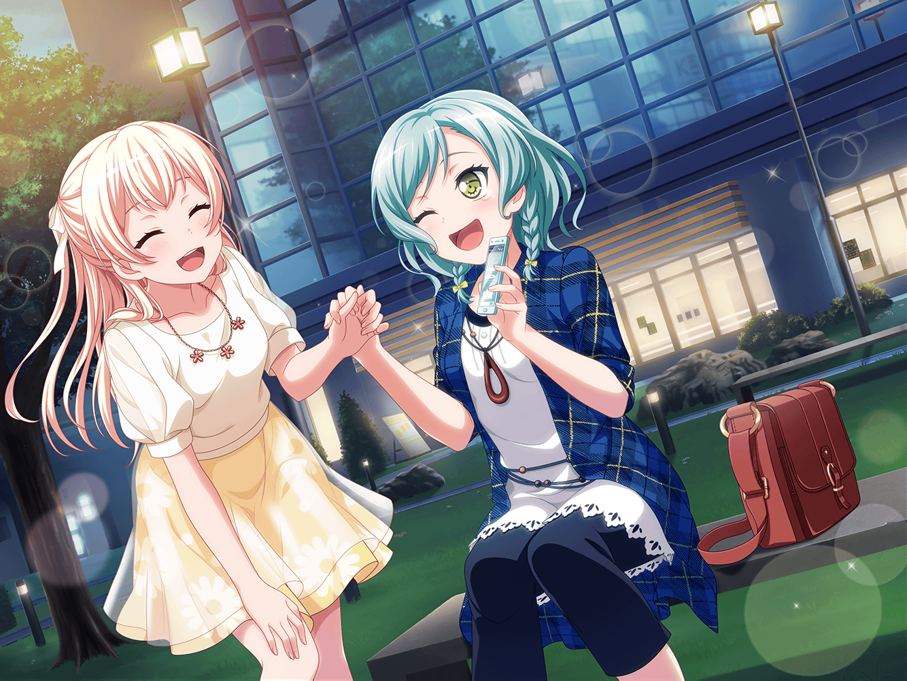

芸能事務所 会議室
彩
今日の衣装あわせ、楽しみだな〜！
日菜
けど、もうパスパレ終わるって言ってたのに
なんで衣装作ったんだろう？
麻弥
曲や衣装を作ったあとに方針が変わっちゃったみたいですね
千聖
スタッフさんの計画性はさておき、
新しい衣装でステージに立てるのは嬉しいわね♪
イヴ
はい！ 今回はどんな衣装なんでしょうか。
早く着てみたいです♪
スタッフ
すみません、お待たせしました！
みなさんの衣装をお持ちしましたので、順次フィッティング
お願いします〜！
彩
わあ……っ！ この衣装、かっこいい〜！
イヴ
本当ですね……っ！ 今までの私達の衣装とは
なんだかちょっと違う感じがします！
千聖
ショートパンツの衣装って、私達にしては珍しいわね。
それに、レザーの質感も新鮮だわ
彩
はっ、そうだ……！ 今日はフィッティングだもん、
ちゃんと着心地確かめなくっちゃ
麻弥
ジブンもついつい浮かれちゃってました……あはは……
日菜
こういうこと前にもなかった？
なーんか懐かしいな〜
彩
バンドが結成されてすぐの頃のことだよね
イヴ
あの時用意していただいた衣装……私達、まだ着てます。
色々、大変なことがあって、活動をお休みしていたことも
ありましたけど……でも、まだ着ています！
イヴ
だから、この衣装も、私達でずっとずーーっと着られるように
がんばりたいです！
千聖
そうね。大切に着ましょう。
……すみません、脇のところが少しゆるいので、
詰めていただけますか？ それから――
スタッフ
……では、フィッティングは以上ですね。
ご意見いただいた箇所は調整します。お疲れ様でした
一同
お疲れさまでしたっ！
スタッフ
あ、それともう１点……合同ライブなんですが、
ご招待したい方がいたら私までご連絡ください
千聖
今回は何人招待できるんでしょうか？
スタッフ
かなりの人数をご招待できるように調整しましたので、
まずは呼びたい方を全員教えてください。
あくまで、常識の範囲内で……ですが
スタッフ
先日のお話もありましたが、現段階では活動の
区切りにもなるライブになるかもしれませんので、
みなさん呼びたい方にぜひお声がけください
彩
あ……
イヴ
区切りにならないように、最高以上の最高にするまでですっ！
私達の晴れ姿、お友達にも見てもらいましょう！
千聖
ええ、そうね

帰り道
日菜
ねえねえ、みんなは誰を招待するか決めた？
イヴ
私は、両親はもちろんですが、
同じクラスのみなさんや、ツグミさんを招待したいです！
本当はハンネも呼びたかったのですが……遠方なので
麻弥
ジブンは、奥沢さんやあこさん、北沢さん達を
お呼びしたいですね〜。以前、お世話になりましたから
彩
千聖ちゃんは決めてる？
千聖
私は花音を誘おうと思っているの。
いつも見に来たいと言ってくれていたから
麻弥
薫さんは誘わないんですか？
千聖
どうしようかしら。枠があるならいいけど
彩
枠はいっぱいあるって言ってたから大丈夫だよ！
日菜ちゃんは、紗夜ちゃん誘うんだよね？
日菜
うん、そのつもり！ けど、おねーちゃん忙しいから。
今までも来てくれなかったんだー……次は来てくれると
いいんだけど
彩
紗夜ちゃん、きっと来てくれると思うよ！
私、同じクラスだし言っておこうか？
日菜
ううん。いいよ、あたしからちゃんと誘いたいから！
さっそく連絡しよっと。来てくれますよーに……！
彩
イヴちゃん、つぐみちゃんだけじゃなくてAfterglowの
みんな招待しようよ！
曲の件とか、いっぱいいっぱい助けてもらったし！
イヴ
素敵ですね！
私達の『Y.O.L.O!!!!!』、聴いてもらいましょう
千聖
蘭ちゃんに『悪くない』って言ってもらえるように
ライブ、がんばらないとね
彩
うんっ！ 蘭ちゃんみたいにかっこよく歌えるように……
本番まであと少しだけど、みんな、がんばろうっ！
日菜
……あ、おねーちゃんからだ♪
……わあっ！ やったー！
千聖
日菜ちゃん、どうかしたの？
日菜
ライブ、おねーちゃん来てくれるんだって！
千聖
良かったじゃない！
それじゃあ、なおさらいいところ見せないとね
日菜
……あのね、昔だったらおねーちゃん、
きっとライブ、来てくれなかったと思う

日菜
おねーちゃんと昔みたいに仲良くなりたいって
ずっと思ってたんだけど、それって昔のあたしじゃ無理で。
願いごとみたいなものだったんだよ
日菜
だけど、パスパレに入って、おねーちゃんはRoseliaに
入って……あたしも、おねーちゃんも変わった。
不可能を可能にしようってお互いにがんばった。そしたら……
日菜
ライブにまで来てくれるようになった！ これって、イヴちゃんが
言ってた夢と目標は繋がってるって話みたいだなって。
もしかするとさ、あたしも夢とか目標とか、持てるのかも♪
千聖
……バンドに入って一番変わったのは、私かもしれないって
思っていたんだけど、もしかすると一番変わったのは
日菜ちゃんかもしれないわね
日菜
そうかな？ ふふ、あたしは千聖ちゃんだと思うけど！
……まいっか。ライブ、がんばろーっと♪